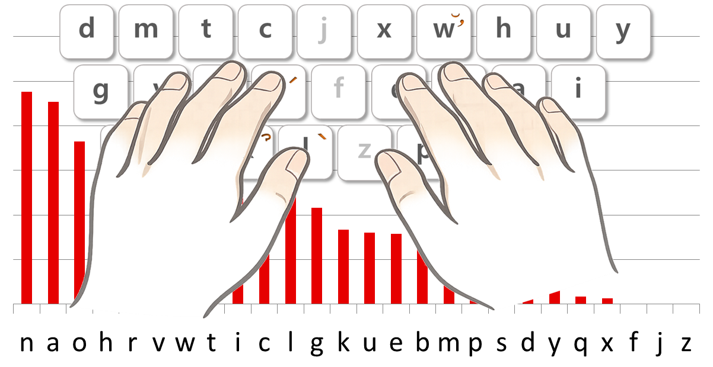
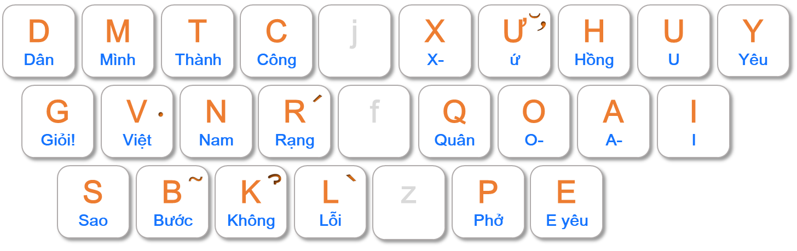
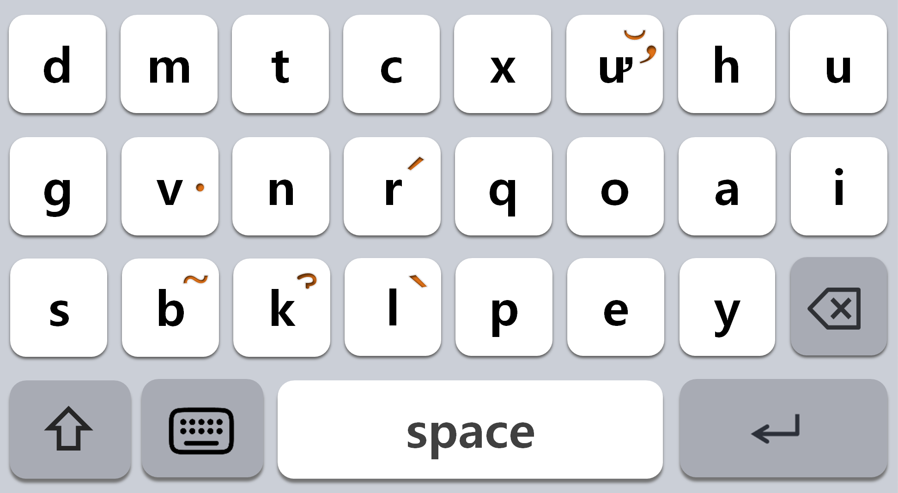

Giảm thiểu khoảng cách di chuyển của ngón tay

Học thuộc bàn phím qua bài hát

Các nút bấm đủ lớn hơn

Tính năng này yêu cầu bàn phím PC.Vui lòng truy cập từ máy tính.
📱 Quét mã QR bằng điện thoạiđể trải nghiệm ngay